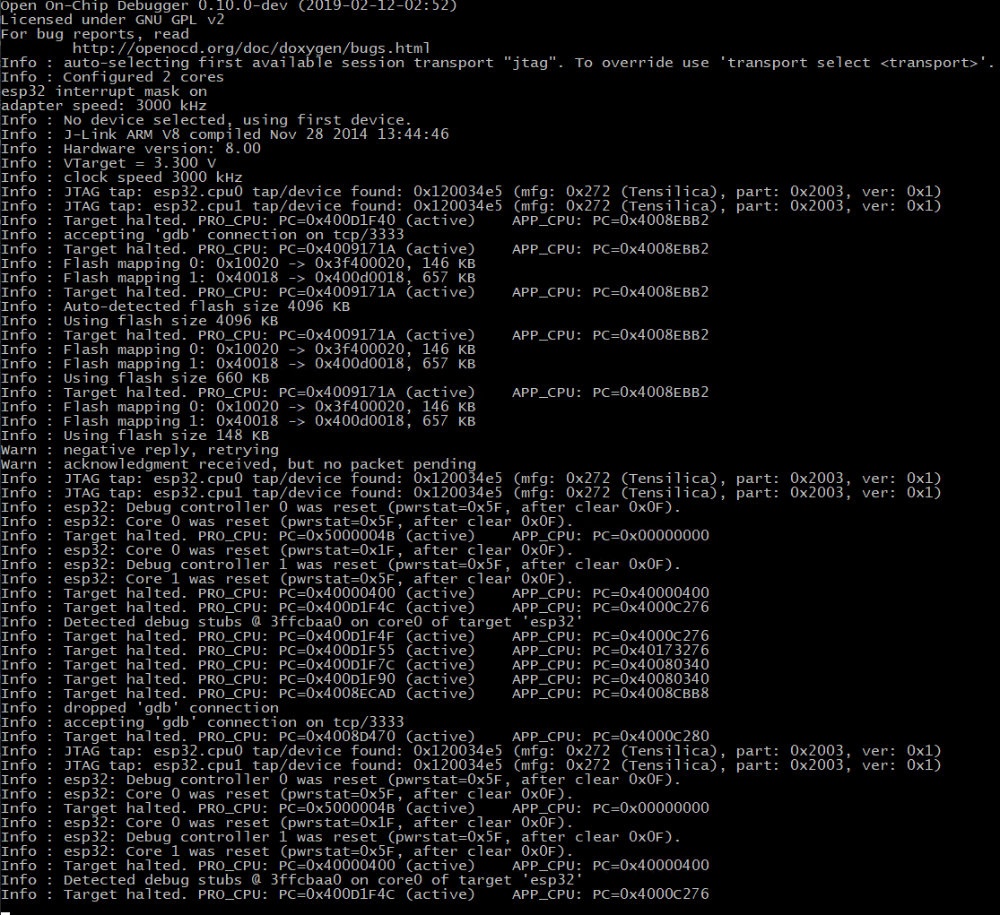
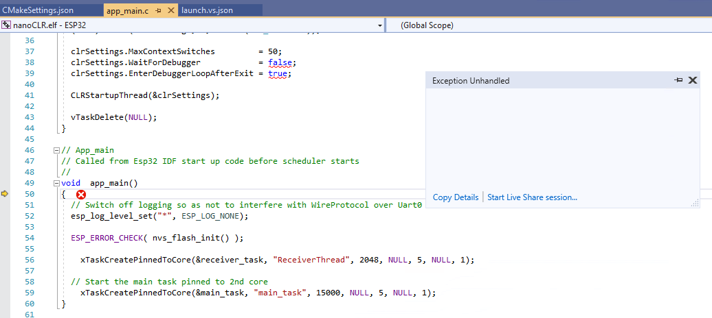

Building .NET nanoFramework in Visual Studio
⚠️ NOTE about the need to build .NET nanoFramework firmware ⚠️
You only need to build it if you plan to debug the native code, add new targets or add new features at native level. If your goal is to code in C# you just have to flash your MCU with the appropriate firmware image. There are available ready to flash firmware images for several targets, please check the Home repository.
Developing firmware for the nanoframework using Visual Studio 2019 community edition
The development process described below for VS2017 was initially focused on the STM32/ChibiOS target, with the Espressif ESP32 added later. In this update we will use the ESP32 as our example, for STM32 specific information refer to the VS2017 section.
The very long file names used in the ChibiOS builds can result in exceeding the Windows 250 character path limit. Sometimes CMake will complain about this, or you may get seemingly random failed builds. The previous workaround for this was to place your source in a top-level directory. As an alternative we have been using the Windows
SUBSTcommand to access the source via ashorted drive mapped path. There are some tools provided to automate this process.
First set up a working build environment with VS Code (Recommended)
While it is possible to set up a successful build and debug environment using VS 2019, setting up the VS Code environment first is highly recommended. This is the most used and tested path, and should you run into any obstacles along the way you will most likely be able to get assistance from other users. Once that is up and running, you can switch to your preferred IDE!
Follow along with one of the guides here:
Install Visual Studio 2019 Community and workloads
You should now have the pieces in place to build, deploy and debug the nanoFramework interpreter, and you may have already installed Visual Studio and tried running some of the managed code examples. We now need to hook these pieces up with Visual Studio so we can use it to run the build/deploy/debug process.
Install the following :
| Software | Workload/Component |
|---|---|
| Visual Studio 2019 community edition | Linux development with C++ |
| option | C++ CMake tools for Windows and Linux |
| option | Embedded and IoT Development tools |
Configuration Files
VS Code and VS2019/2017 keep the majority of their configuration files in "hidden" directories (in the sense that Unix/Linux hides directory names beginning with a period). For VS Code this is named ".vscode" and for VS2019 it is named ".vs", which helps to keep them from treading on each others toes.
The VS2019 IDE normally hides the contents of this directory in Solution Explorer, but if you go to the task-bar at the top of the Solution Explorer pane and hover over the icons you will find Show All Files. When selected, these files appear below in "Local Settings (.vs)"
The two configuration files in .vs are tasks.vs.json and launch.vs.json. When you clone the nf-interpreter repository there will be two files names tasks.vs.SAMPLE.json and launch.vs.SAMPLE.json, which you can copy as the appropriate name and then modify to suit your configuration if required. Note that these are SAMPLE rather than TEMPLATE files as they are not used as a basis for automatic configuration, but are there as an example of something that is known to work.
Unlike VS2017, VS2019 currently rewrites your JSON configuration files,and in doing so will remove any comments you have added. This may strictly follow the JSON spec., but for human readable configuration files is a Really Bad Thing! Hopefully MS will realize this and change the behaviour, perhaps taking on a more reasoned format such as JSON5
tasks.vs.json
This adds some entries to the Right-Click context menu for items in the Solution Explorer pane, for example CMakeLists.txt. The sample file is set up for the ESP32, and uses esptool.py to erase or program Flash on the device. You may need to modify the "port" setting near the top of the file from COM3 to the port your ESP32 is connected to.
launch.vs.json
This is used to launch the debugger, using GDB locally with OpenOCD acting as the GDB server providing a connection to your device. The example for ESP32 is using a SEGGER JLINK device to connect to the ESP32 JTAG pins, while the STM32 example uses the STM32 STLINK interface on the STM769IDiscovery board.
Note that we haven't been able to get the debug system working purely using the VS2019 resources, and we call a Windows batch file "startocd.bat" to handle the OpenOCD configuration details. Take a look at that file and modify it to suit your configuration. (It can have comments as VS doesn't mess with it!) When you have something that works please let us know and we can add it as another option to the file.
GDB requires
/separators in the path passed for the executable file and symbols, rather than the windows backslash\, and at present neither VS Code or VS2017/2019 can do that for us when expanding variables, hence the need to add a hard-coded file path. For VS Code we have a neat little extensionnfto take care of that for us, but at this stage no such solution for VS.
CMakeSettings.json
This is the main configuration file for setting build options for the nf-interpreter, and is located in the root directory. Currently the repository has the actual file rather than a SAMPLE version, something we need to review as we don't want updates overwriting your local modifications!
You may prefer to work from a local branch that keeps your changes safe, rather than the
developbranch. I currently use a branchSaveLocalSettingsto build,with a small script that automatically pulls and merges upstreamdevelopchanges into it.
Note that VS2019 will walk all over this file! But on the up-side it does give you a nice GUI interface for changing the options included in your build and generating the system, something not present in VS2017. To access this Right-Click on CMakeSettings.json in Solution Explorer, and select the option "CMake Settings for nanoFramework".
Helper Batch Scripts
RunCmd.bat
Helper script to run a command in a separate console window, with a timeout after the command completes before closing the window. This was required when programming ESP32 boards requiring manual intervention (button press). Esptool.py sends a sequence of ___...___...___... during which you may need to hold the boot button and press reset, however VS2019 buffers the output window so you don't see this until it is too late.
First parameter n is timeout in seconds.
- n = 0 - wait for user input after command completes
- n > 0 - wait for n seconds after command completes
- N < 0 - wait only if command completed with error
SetNFRoot.bat
This script is used to help overcome the problem of file paths exceeding the Windows 250 character limit when building nf-interpreter. It does this by usingthe Windows SUBST command to map an unused drive letter to the source root directory. If a mapping already exists, it will be re-used. The environment variable nfRoot is set to this location, which can be accessed from within Visual Studio.
For example, if my source root is located at D:\usr_chronos\Sandbox\NanoFramework\nf-interpreter\
D:\usr_chronos\Sandbox\NanoFramework\nf-interpreter>SetNFRoot.bat
Found free drive letter: B:
Created new subst for D:\usr_chronos\Sandbox\NanoFramework\nf-interpreter\ on B:
You can remove it with subst B: /D
Using short path B:\ for D:\usr_chronos\Sandbox\NanoFramework\nf-interpreter\
B:\
Now we can refer to the source root as B:\ and build from there, giving as a substantially shorter path.
The script output (see above) is sent to stderr rather than stdout, except for the final B:\, meaning it can be used as a command variable expansion in VS, as well as an environment variable expansion, ie ${env.nfRoot} or ${cmd.SetNFRoot.bat}
startocd.bat
This script is called by GDB to start OpenOCD as a separate process, you can add additional entries to the bottom of the script following the existing pattern. The label is passed from a line in launch.vs.json, default is for ESP32 with J-Link.
The script currently starts
C:/nanoFramework_Tools/Tools/openocd/bin/openocd.exefor theSTM32_STLINKlabel, which is what you will have installed if you followed the STM32 instructions, but I've actually had better results using the ESP32 version of OpenOCD with the STM32. If you have that version installed just comment out the line following the:STM32_STLINKlabel.
Build Locations
We are able to build in separate locations to suit the target type and configuration we are working on. The current layout is to use the Build subdirectory to contain all the separate build types folders, so Build\ESP32 for ESP32 vanilla build, Build\ESP32_test for a test build, etc.
The STM32 builds are most likely to require a shortened build path, so we can use "${env.nfRoot}Build/${name}" in our CMakeSettings.json file STM769IDiscovery section. The build will then be done in "B:\Build\STM769IDiscovery".
Debugging
Once the program has been built and loaded into flash, you can launch the debugger. You need to select the launch configuration from the dropdown, as shown:

Note that the launch configuration, here
ESP32 nanoCLR - Segger JLink, may not show up for selection in the dropdown immediately, in some cases it takes some minutes to be available. We assume VS2019 is doing something in the background, if anyone knows the cause or a way to speed this up please let us know!
You can then commence debugging from the top DEBUG menu.
OpenOCD should open in its own console window, connect to the target device, and display something similar to this:

In the VS2019 IDE output Window you should see:
=thread-group-added,id="i1"
GNU gdb (crosstool-NG crosstool-ng-1.22.0-80-g6c4433a5) 7.10
Copyright (C) 2015 Free Software Foundation, Inc.
License GPLv3+: GNU GPL version 3 or later <https://gnu.org/licenses/gpl.html>
This is free software: you are free to change and redistribute it.
There is NO WARRANTY, to the extent permitted by law. Type "show copying"
and "show warranty" for details.
This GDB was configured as "--host=i686-host_pc-mingw32 --target=xtensa-esp32-elf".
Type "show configuration" for configuration details.
For bug reporting instructions, please see:
<https://www.gnu.org/software/gdb/bugs/>.
Find the GDB manual and other documentation resources online at:
<https://www.gnu.org/software/gdb/documentation/>.
For help, type "help".
Type "apropos word" to search for commands related to "word".
Warning: Debuggee TargetArchitecture not detected, assuming x86_64.
=cmd-param-changed,param="pagination",value="off"
@"Detected debug stubs @ 3ffcbaa0 on core0 of target 'esp32'\n"
@"Target halted. PRO_CPU: PC=0x400D1F4C (active) APP_CPU: PC=0x4000C276 \n"
[New Thread 1073557668]
[New Thread 1073555768]
[New Thread 1073561472]
[New Thread 1073560324]
[New Thread 1073548060]
[New Thread 1073544580]
[New Thread 1073546588]
[New Thread 1073549192]
[Switching to Thread 1073553736]
Temporary breakpoint 1, app_main () at ../../targets/FreeRTOS_ESP32/ESP32_WROOM_32/nanoCLR/app_main.c:50
50 {
=breakpoint-deleted,id="1"
The processor has now stopped at the temporary breakpoint inserted by our launch.vs.json startup sequence, showing as an Exception at the entry point in the source code window.

You can now step through the code, observe variables, set breakpoints and so on.
Summary
This documentation is a work in progress, as is Visual Studio support for this type of project.
Your feedback and contributions are welcome!
Developing firmware for the nanoframework using Visual Studio 2017 community edition
The instructions for VS2019 are more current and can in the most case be used for VS2017 as well
🚧 IMPORTANT : The firmware build for Visual Studio is under construction. 🚧
Some compromises were required to get this to a working stage. I made a decision to put the code at the top level to reduce path length of files which caused warnings of the potential to overflow the command line.
Hard coded paths are used to ensure it works with the current CMake coding and the Microsoft usage of CMake There are some issues with the CMakeSettings.json file with path separators.
Directory structure for the project
Two top level directories have been created to support the development with Visual Studio.
c:\nanoFramework\nf-interpreterc:\nanoFramework_Tools
c:\nanoFramework\nf-interpreter
- The nf-interpreter repository is cloned to this directory.
c:\nanoFramework\nf-interpreter\Build
- This directory contains the build output, the files in here are transient. When the CMake cache is deleted, files in this directory are deleted. The files in this directory are only visible when selecting "Show All Files". These files are not part of the GIT repository. At the end of a successful build the build outputs are copied to the \Build directory.
- Note: It is sometimes necessary to delete the contents of these folders if Visual Studio misbehaves. Using Visual Studio with CMake results in what appears to be inconsistencies at times. Sometime the CMake server goes away, shutting down Visual Studio and restarting usually fixes the problem.
- Note: After clearing the CMake cache, on occasions the build/chibios_source directory is left empty or only containing the .git file due to some conflict. The current CMakeLists.txt file finds the directory and does not re-copy the code. It is necessary to manually delete the directory from file explorer and generate the cache for the copy to run. _
c:\nanoFramework_Tools\
Manually create this directory to contain the following folders.
c:\nanoFramework_Tools\ChibiOS
Copy of the ChibiOS repository cloned from https://svn.osdn.net/svnroot/chibios/branches/stable_21.11.x
C:\nanoFramework_Tools\Tools\openocd
Copy of the OpenOCD installation https://github.com/xpack-dev-tools/openocd-xpack/releases
C:\nanoFramework_Tools\Tools\
Place a copy of the hex2dfu.exe tool here
Major configuration files
Main CMakeSettings.json
Configuration file used by Visual Studio. This is the standard configuration file for CMake development. This file can contain more than one configuration. In addition to setting the compiler toolchain, additional variables are defined to select the target hardware and operating system to build. Note: Work in progress
CMakeLists.txt
This is the standard CMakeLists.txt file for the nf-intepreter
Main launch.vs.json
Sets up the debugging environment using the gdbserver debugging via configurations. The example references the openocd application.
Setup and Installation
| Software Component | Notes | Link |
|---|---|---|
| Visual Studio 2017 community edition | Linux development with C++ | |
| option | Visual C++ tools for CMake and Linux | |
| option | Embedded and IoT Development | GCC version 6.3.1. December/2018 |
| GCC Tool Chain - Version 7-2018-q2-update | GNU Arm Embedded Toolchain | https://developer.arm.com/open-source/gnu-toolchain/gnu-rm/downloads |
GCC Toolchain NOTES
Version 6.3.1 installed by Visual Studio has a problem with fallthrough, Version 8, has a problem with structures ( an issue has been raised to fix this)
The following GCC version has been download, installed and tested.
GNU Arm Embedded Toolchain - Version 7-2018-q2-update https://developer.arm.com/open-source/gnu-toolchain/gnu-rm/downloads#
In CMakeSettings.json the following variables determine the build tool.
{
"name": "TOOLCHAIN_PREFIX",
"value": "C:/Program Files (x86)/GNU Tools Arm Embedded/7 2018-q2-update"
// "value": "${env.GCCPATH}" // Standard Visual Studio Install of GCC 6.3.1
},
In CMakeSettings.json the VISUAL_STUDIO variable sets up a workaround for a problem with the build system.
If you use the add_custom_command with POST_BUILD then the build compiles but does not link due to a 'cmd.exe' not recognized'
{
"name": "VISUAL_STUDIO",
"value": "TRUE"
},
To avoid the problem the custom command to copy the build outputs is not run.
An equivalent of this can be run by executing CopyBuildOutput.cmd manually from the command prompt.
Debugging the solution
The launch.vs.json file contains an example configuration for setup to debug the STM32769IDiscovery board. Additonal configurations can be added, although the implementation of the options does not seem consistent with the VSCODE version and some options do not appear to work properly. Also, the whole system is a bit flakey. The openocd program is run as sub process of Visual Studio,and if it runs into problems the system fails, and you must run up task manager to end the openocd.exe task listed as a process of Visual Studio.
Diagnosing problems with the debug and launch.vs.json
You can get a better understanding of problems that may be occuring with the gdb/openocd debug setup. In Visual Studio select the Command Window Ctrl+Alt+A, and turn on debug logging with the following command.
debug.midebuglog /On:c:\Temp\debug.log
Run a debugging session to collect data and turn it off with the following command.
debug.midebuglog /Off
This will give you a log of the operation and communications occuring. ( Good luck!)
An example snippet displays error for "Monitor reset halt (not quite sure why?)
8: (1976730) ->^done
8: (1976730) <-1005-interpreter-exec console "monitor reset halt"
8: (1976730) ->(gdb)`
8: (1976741) ->&"\"monitor\" command not supported by this target.\n"
8: (1976742) ->1005^error,msg="\"monitor\" command not supported by this target."
8: (1976742) ->(gdb)
8: (1976742) 1005: elapsed time 11
8: (1976742) <-1006-interpreter-exec console "monitor reset init"
8: (1976742) ->&"\n"
8: (1976742) ->^done
8: (1976742) ->(gdb)
Feedback
If you are using this your feedback is greatly appreciated. Please join our Discord community and start chatting about this.